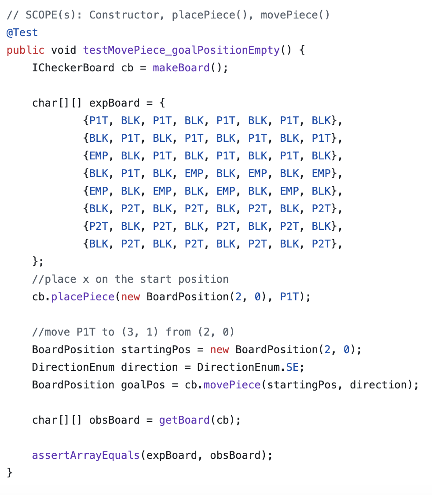
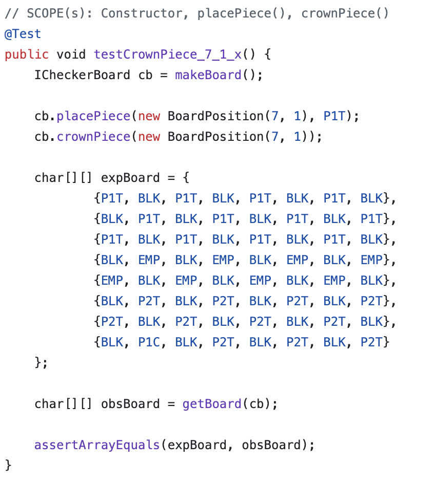
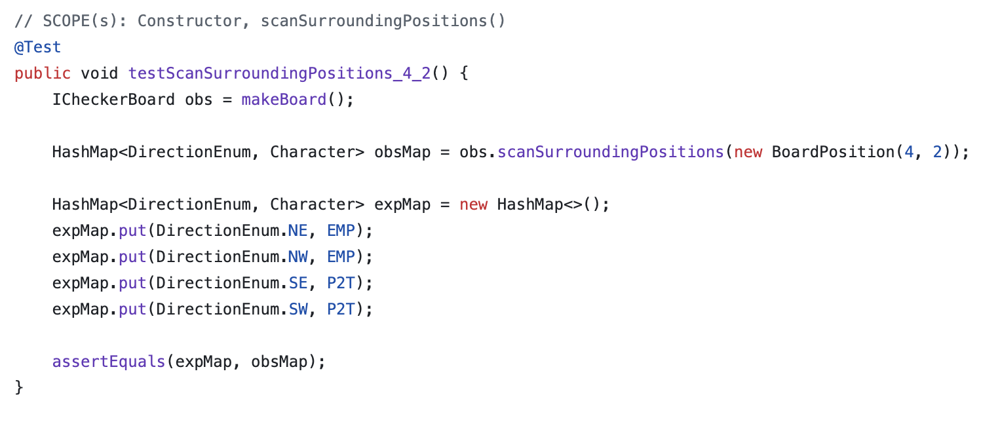

Checkerboard Game
Team Project | Java
Developed a command-line checkerboard game in Java as part of a four-person team. This project includes gameplay logic, JUnit testing, and UML-based design work.
Technologies: Java, Git, Terminal I/O, JUnit, UML
- Implemented logic for legal and invalid moves.
- Worked on turn flow to support consistent gameplay behavior.
- Built and reviewed JUnit tests for movement, crown behavior, and rule enforcement.
- Created UML diagrams and supporting documentation to clarify system structure.




Add the UML image here when you have the local file ready.